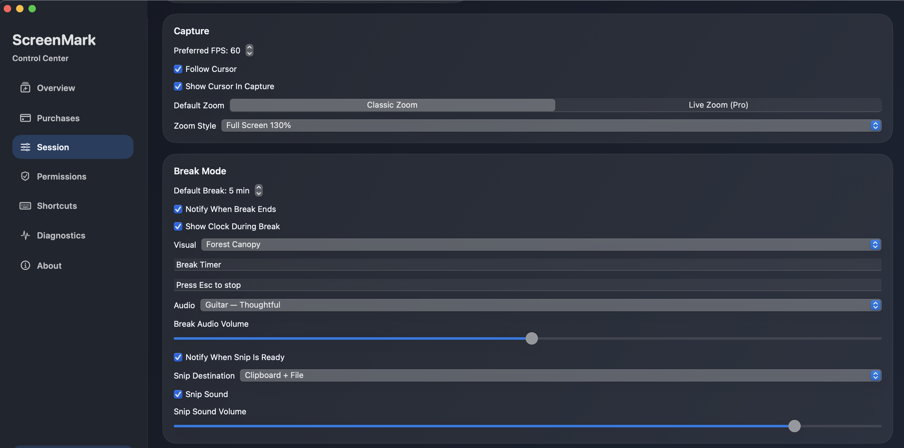
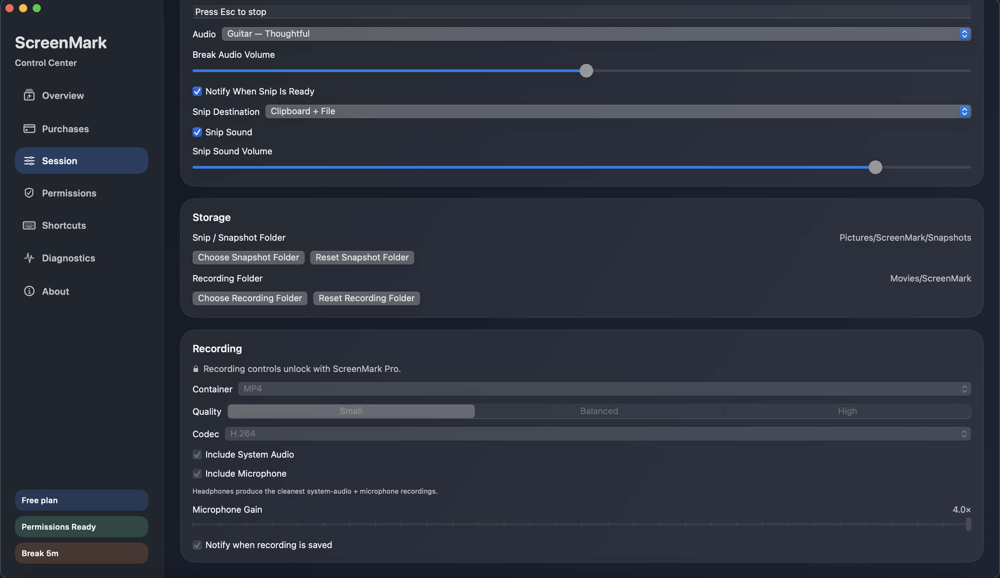
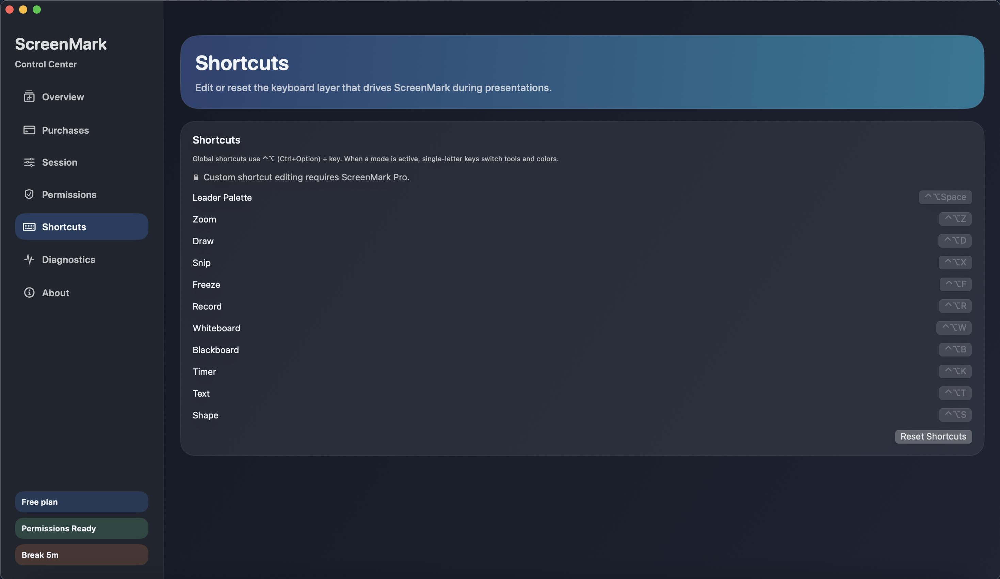
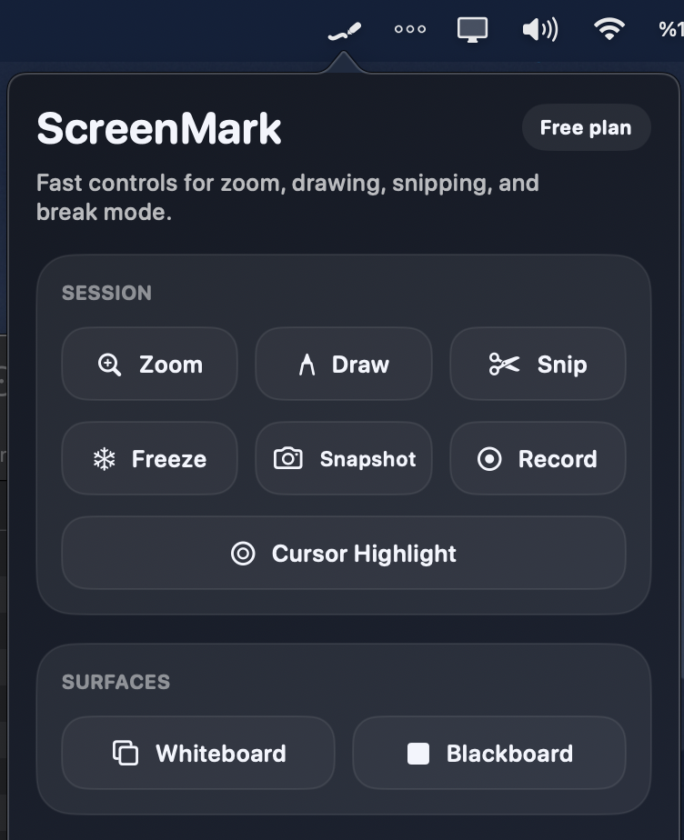
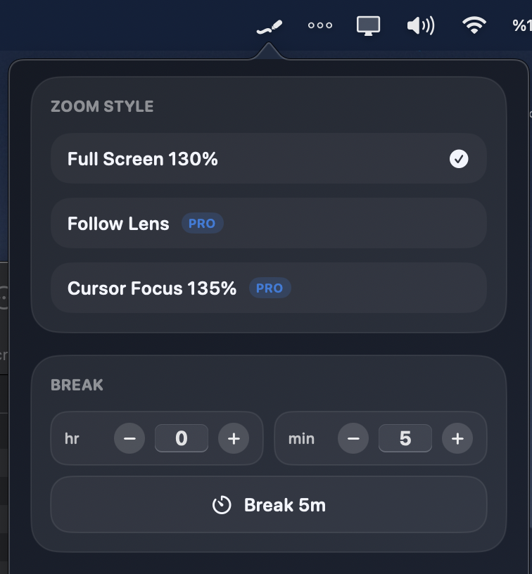

Free
$0 forever
Menu bar controls, essential annotation overlays, and the non-paying experience whenever you need it.
ScreenMark is your menu bar companion for live annotation, zoom, whiteboard, freeze frame, and recording — all without leaving your flow.

From a quick annotation to a full recording session — ScreenMark keeps it all one click away.
Magnify any area of your screen in real time. Keep viewers focused without moving windows or resizing anything.
Draw, box, arrow, type, blur, or spotlight directly over live content. Annotations disappear the moment you stop — or stick around if you want.
Pause the display on any moment. Switch windows freely while your audience sees a frozen snapshot.
Cover your screen with a blank canvas and sketch freely. Ideal for teachers, workshop facilitators, and live code walkthroughs.
Show an on-screen countdown for breaks, exams, or Pomodoro blocks. Fully customisable, floats above your content.
Capture your screen with microphone or system audio. Export to MP4 or MOV. GIF recording supported for silent demos.
Scroll through the gallery to explore the annotation overlay, whiteboard, zoom, and recording tools.





Activate Whiteboard Mode and your screen becomes a full drawing surface — perfect for teaching, live code walkthroughs, or any session where a visual explanation beats a slide deck.
Switch between white and black backgrounds instantly. Annotations persist so you can build diagrams step by step.
Pen, highlighter, eraser, shapes, arrows, and text — all accessible in one click. Customise stroke width and colour to match your content.
Annotations render at full Retina resolution, crystal-clear on any Mac display including Pro Display XDR.
Record your screen with mic audio, system audio, or both. Export walkthroughs as MP4 or MOV for tutorials, bug reports, and async reviews.
Silent GIF recording exports clips directly to your clipboard for instant paste into Slack, Notion, or GitHub issues.
Download for free and upgrade only when you need the advanced tools.
$0 forever
Menu bar controls, essential annotation overlays, and the non-paying experience whenever you need it.
$39.99 / year
Full Pro feature set. Eligible new subscribers can start with a 7-day introductory App Store trial.
$4.99 / month
$59.99 lifetime
Monthly includes the same introductory-trial eligibility. Lifetime is a one-time App Store purchase — no subscription.
App Store subscription availability, introductory offer eligibility, pricing tiers, and local currency conversions are managed by Apple.
Screen Recording powers zoom, freeze, snip, and recording. Microphone access is used only when you choose to record mic audio.
No account required. Nothing you draw or capture is uploaded to a ScreenMark server. Purchases are handled entirely by the App Store.
Permission guidance, restore-purchase steps, and contact details are on the support page.
ScreenMark is free to download on the Mac App Store. No account, no subscription required to get started.
Download on Mac App Store